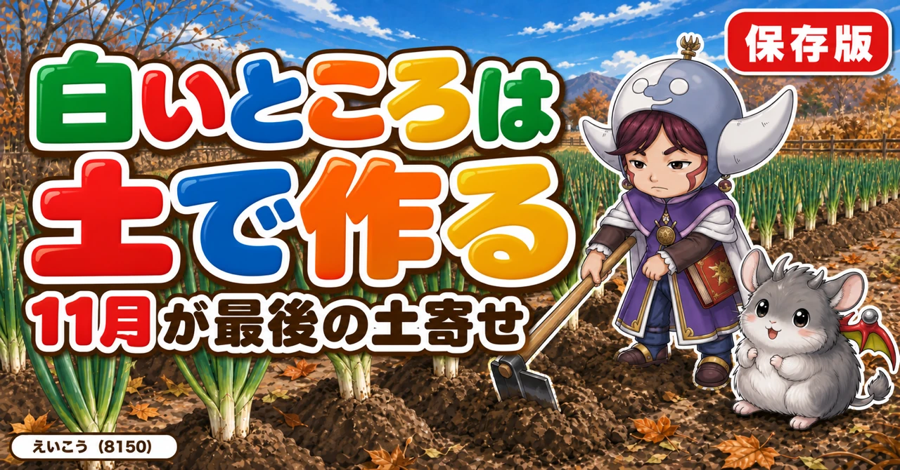
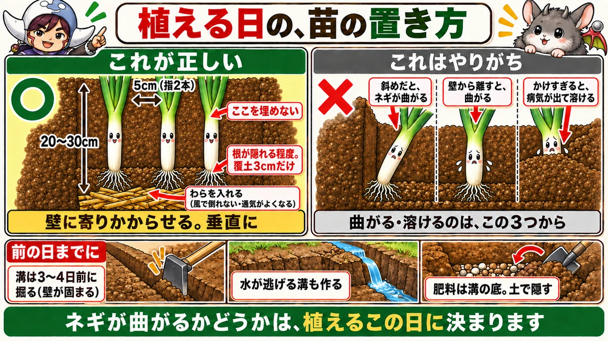
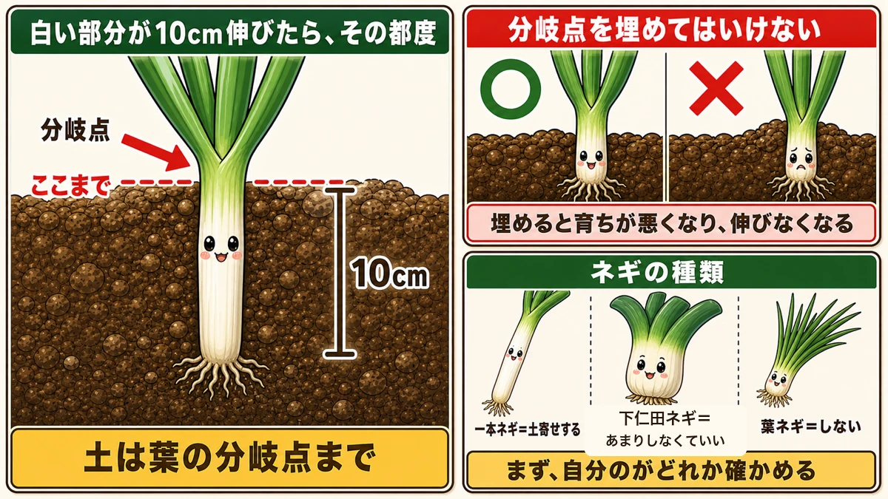
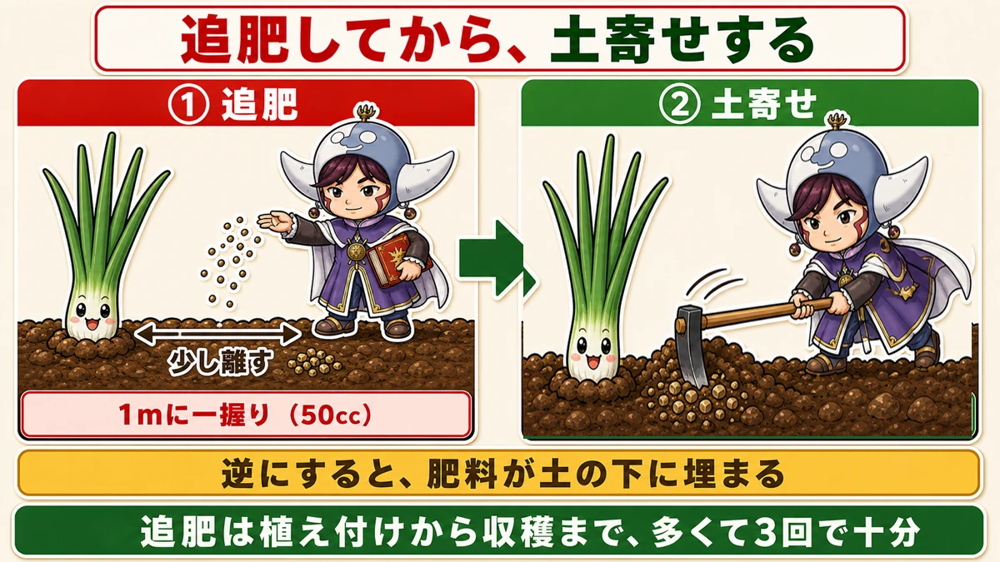
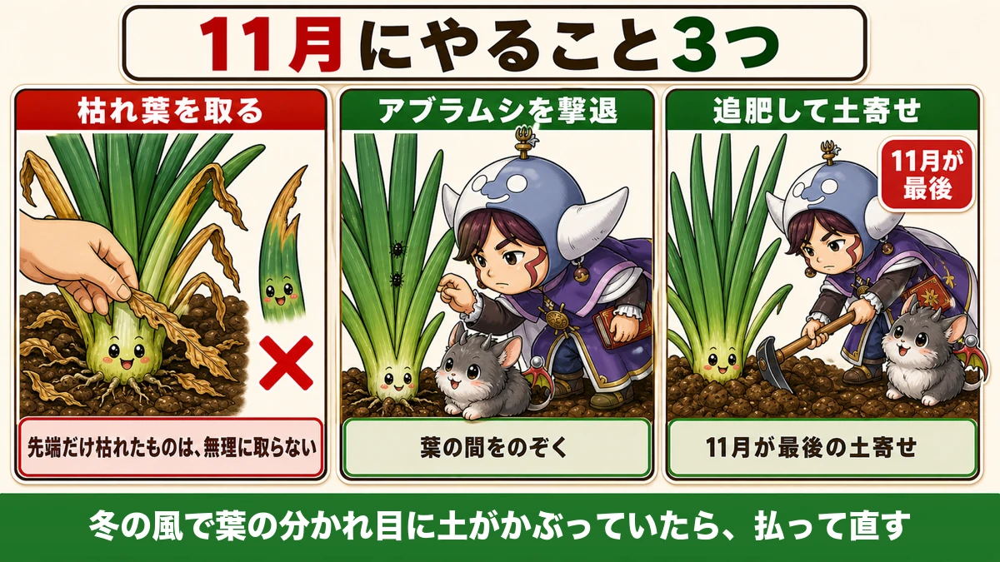
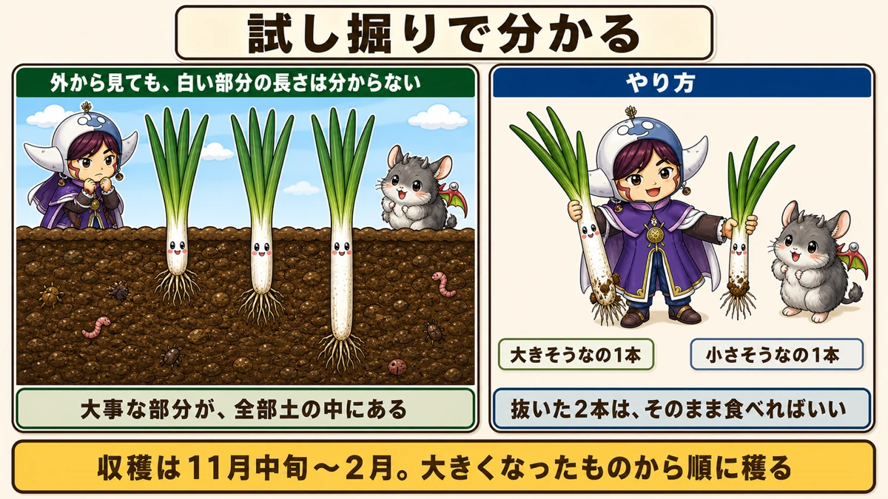
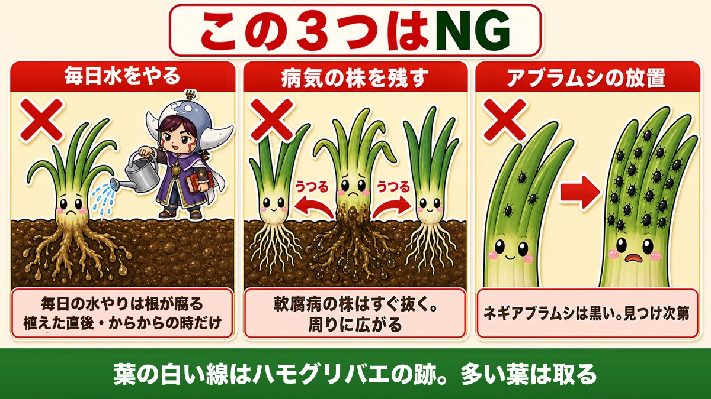

ネギ栽培の段取り帳｜植え付け・土寄せ・溶ける症状の見分け方

どうも、8150（えいこう）です🌱 家庭菜園歴8年、理科の教員免許を持っていて、有機・無農薬で野菜を育てています。
📖 この記事の目次
この記事で分かること
- 長ネギは白いところを伸ばす育て方、葉ネギは緑の葉を収穫する育て方。最初に食べたい部分を決めます。
- 根づいた株を育てる場所は、日が当たり、雨のあとに水が抜ける場所を選びます。
- 溝へ苗を置くときは根を覆う程度から始め、伸びに合わせて土を寄せます。初日から溝を埋め切りません。
- 株が傷んだら、水分・肥料・葉の分かれ目にかかった土を順番に確認します。
- 収穫の判断は太さだけで済ませず、試し掘りで白いところの長さも見ます。
- 増やすときは『一本を太らせるタイプ』『株元から分かれるタイプ』を区別。ねぎ坊主の残し方も目的で変えます。
ネギの栽培で迷いやすいのは、「土をかけるほど白くなるのに、かけすぎると傷む」というところです。白くしたい気持ちはあっても、株が伸びる前に先回りして埋めない。ここが作業の軸になります。
このページでは、みなさんがいま困っている場所から調べられるように、数字、作業、症状を分けて並べました。まだ苗がない方は早見から。すでに植えている方は症状の章からでも大丈夫です。ネギに追いつこうとして、いきなり全部の作業をする必要はありません☺️
早見：ネギの育て方（ひと目で分かる数字）
時期・間隔・土の数字
- 育ちやすい温度：15〜20℃。夏の高温が長引くと、秋の太り始めが遅れることがあります。
- 土の酸度：pH6.0〜7.0が目安。数字だけで資材を足さず、現在の土の値を確認します。
- 種まきの計画：春の育苗では3〜4月の温度管理の説明があります。全地域に共通する種まき日や秋まきの適期は、今回の材料にはありません。種袋の地域別表示を確かめます。
- 春の植え付け：3〜5月という目安。種から始める日と、育った苗を植える日を混同しません。
- 仮植えを挟む計画：遅くとも5月までに苗を移し、お盆ごろ、遅くても8月中に本植えする説明があります。
- 冬に収穫する苗の植え付け：9月〜10月初旬までを候補にする説明もあります。暑い時期に植える計画とは条件が異なります。
- 干しネギの植え付け：8月下旬が目安。通常の若い苗と、乾かして保存した株は別に扱います。
- 苗の目安：鉛筆ほどの太さ、草丈約30cmという説明と、40〜50cmまで育てる説明があります。使う溝の深さと合わせて見ます。
- 種にかける土：5mm〜1cm。説明によって違います。厚くかければ安心、というものではありません。
- 発芽まで：約1週間〜10日という例。温度や管理方法によって変わり、予定日に全粒がそろう保証ではありません。
- 本植えの株間：5〜15cm。植える密度、一本取りか分けつ型か、直立か斜め植えかで変わります。
- 仮植えの間隔：約20cmという説明。束をまとめて置く方法であり、本植えの一本ごとの間隔とは別です。
- 列と列の間隔：複数列では80〜90cmという目安。これは条間で、うねそのものの幅を示す数字ではありません。
- うね幅：すべての方法に共通する指定はありません。列数を決め、土寄せに使う土と作業する通路の場所を確保します。
- 植え溝の深さ：15〜40cmと幅があります。15〜20cm、20〜25cm、約30cm、40cmという説明を、植え方ごとに比較します。
- 植え始めに根へかける土：約3cmを目安にする方法。溝が30cmなら30cm埋める、という意味ではありません。
- 元肥を入れる時期：植える2〜3週間前を目安とする計画。肥料の種類と入れた量によって扱いが変わります。
- 土寄せの間隔：月に一度、または30〜40日おきという説明。暦だけでなく、苗が根づき、上へ伸びていることを条件にします。
- 土寄せの回数：通常の溝植えで3〜4回程度。深い穴へ落とす方法では0回という説明もあります。
- 追肥の回数：多くても3回程度とする説明と、30〜40日ごとに計4回程度とする説明があります。
- 追肥の量：栽培列1mにつき約50cc、ひと握りという例。50gではなく体積です。製品が違えば同じ体積でも成分量は変わります。
- 収穫まで：種からは1年近くという長い計画。購入苗から何日、と一律には示されていません。冬どりでは12月〜翌3月という幅があります。
- 収穫する太さ：直径約2.5cmという目安。ただし品種の違いがあるので、すべての葉ネギをこの太さまで待つ必要はありません。
- とう立ちへの注意：2月後半〜4月が目安。冬どりの終わりと重なるので、3月まで待てば必ずおいしい、とは考えません。
- 連作の間隔：連作に比較的強いという説明がありますが、一律の休作年数は材料にありません。土から広がる病気が出た場所は別に判断します。
数字を選ぶときの確認欄
- 育てるのが長ネギか、葉ネギかを確認した
- 一本取りか、分けつするタイプかを苗の表示で調べた
- 苗の長さと、使う溝の深さを一緒に決めた
- 元肥を入れた日と、本植えの日を分けて記録した
- 収穫したい月から、とう立ちまでの余裕を考えた
例えば、40cmの溝に30cmの苗を使うと、葉を地上へ出す段取りが合いません。数字は一つずつ覚えるより、組にして使う方が分かりやすいです。『苗の長さと溝』『株間と分けつ』『追肥と元肥』のように、相手のある数字として見てください。
畑を使う期間も先に見ておきましょう。秋冬に食べる野菜でも、苗を春から育てる場合は場所を長く使います。夏野菜を片づけた直後の場所へ本植えするなら、それまでの仮植え場所と、土を整える期間も予定に入れます。
作業の手順（時期の順）
1．食べたい部分と、増やす方法を決める
- 鍋物などに使う白いところを長く作りたいか、薬味に使う緑の葉を少しずつ取りたいかを決めます。
- 長ネギ、葉ネギという呼び方に加えて、一本を太らせるタイプか、株元が分かれて増えるタイプかを確認します。
- 初回は購入苗から始めるか、種から育苗するかを選びます。種からなら、苗を育てる場所も必要です。
- 翌年用の苗を残したい場合は、種を採るのか、分けた株を使うのかまで予定に入れます。
長ネギという名前だけで、全部同じ姿を目指す必要はありません。背丈や太さにも違いがあります。葉を収穫したい株へ、白いところを伸ばすための深い溝植えをそのまま当てはめると、作業がちぐはぐになります。
『たくさん植える』より先に、『どう食べる』を決めてみてください。緑の葉を摘む株を数本、冬に抜く株を別に用意する計画もあります。苗を束で買う場合は、使い道を分けておくと置き場所を決めやすいです。
2．日当たり・水の出口・作業場所を確かめる
- 南側の木や建物で長時間影にならないか、植える場所を見ます。
- 雨のあとに水が残る位置を確認し、植え溝から外へ水が抜ける経路を用意します。
- 土寄せで土を集める側と、収穫時に掘る側の通路を確保します。
- 前作で使った肥料と病気の履歴を振り返り、元肥を入れる予定を立てます。
- 土を整えたあと、植えるまで2〜3週間程度を取る方法なら、その期間も日程に組み込みます。
白いところが地下にあるので、ネギは日陰でも育ちそうに感じますよね。でも、地上の葉は光を使って養分を作ります。白くする場所と、光を当てる葉の場所は別です。長く置く作物だからこそ、夏野菜が伸びたあとも影にならないかを考えます。
深い溝は、雨の通り道にもなります。底を掘るだけで水の出口がなければ、そこで水が止まります。通気性をよくする資材を置く前に、雨水が流れる先を確認してください。土の中に空気のすき間があっても、ずっと水で満たされれば根には助けになりません。
肥料の配合は、複数の説明から多い数字だけ拾って足し合わせないようにします。もともと肥沃な場所と、新しく耕す場所は同じではありません。使う製品の成分と表示量を見て、土の履歴に合わせます。
3．容器で苗を育てる場合の種まき
- 育苗トレイかポットを用意します。初めてなら、土が多く入る9cmポットを使う方法もあります。
- 72穴のトレイでは一穴3〜4粒、9cmポットでは約10粒という例を参考に、容器と品種に合わせてまきます。
- 覆土は5mm〜1cmの範囲で選んだ方法に合わせ、厚く埋めすぎないようにします。
- 水は分けて静かにかけ、種が浮いたり流れたりしていないか確かめます。
- 発芽後は明るさと風通しを確保し、保温する覆いの中が暑くなりすぎないようにします。
細い葉の先に黒い種の殻がくっついて出てくることがあります。ネギでは見られる発芽の姿です。殻がついているだけで失敗と判断して、芽を抜かないようにしてください。
種を一昼夜ほど水に浸す方法もあります。発芽を助ける工夫としての説明で、浸せば温度管理を省けるわけではありません。種袋に処理やまき方の指定がある場合は、それを先に確認します。
3〜4月でも、日差しが強い日は覆いの内部が暑くなります。朝の寒さだけを見て閉めっぱなしにせず、晴れた日は裾を開けるなどして換気します。保温を頑張ったのに、昼は暑すぎる・・・これは避けたいところです。
育苗中の水分は、本植えして根づいた株の話と分けて考えます。容器の土は少なく、特に小さなトレイでは乾きやすいです。必要なら朝夕に確認し、乾燥と水のたまりすぎの両方を防ぎます。畑での『毎日の水やりは不要』を、発芽したばかりの苗へ持ち込まないようにしましょう。
4．苗が重なったら間引き、買う苗は仮置き場所を用意する
- 草丈6〜7cm程度で重なった苗を見つけたら、残す苗を傷めにくいようにハサミで切る方法があります。
- 長さ約15cm、太さ3〜4mmほどになったら、次の間引きを考えます。苗床では最終的に約1cmの間隔という目安です。
- ポットの方法では、9cmポットの苗を5〜6本程度残す説明があります。畑の苗床の間隔とは区別します。
- 購入苗は売り場にあるうちに確保し、すぐ本植えしない場合は仮植え先を決めます。
- 苗の大小を分け、細い苗が大きな苗の陰にならないようにします。
苗は、店にいつでも同じ量が並ぶとは限りません。植えたい日に買いに行く計画だと、売り切れていることがあります。早めに用意して育てておく方法を知っておくと、作業日を調整しやすいです。
ここでいう間引きは、小さな苗の混み合いを減らす作業です。本植え後の株間5〜15cmとは目的が違います。育苗の数字を、そのまま冬に太らせる株の間隔にしないようにしてください。
5．仮植えで苗を育て、本植えに備える
- 苗を育て直す場所を決め、本植え場所とは別に管理できるようにします。
- 約20cm間隔で束をまとめて置く方法など、採用する仮植えの段取りに合わせます。
- 根が風で浮かないように土をなじませ、葉の分かれ目の上まで埋め込まないようにします。
- 雑草を取りながら、月に一度程度の軽い土寄せで株の状態を確認します。
- 本植えの時期になったら苗の太さと長さを見て、用意した溝に合うものから移します。
仮植えは、買ってきた苗を置いておくためだけの作業ではありません。混んだ苗床から移して、根元を育てる段階として使います。根元に養分を蓄えた苗を別の場所へ移すと、植え直したあとの伸びを助ける、という説明があります。
小さな苗を一本ずつばらして仮植えすると、風で揺れ、根が浮いて乾きやすくなることがあります。まとめて置く方法は、この時期の固定を考えたものです。ずっと束のまま収穫するためではないので、本植えの段階では選んだ株間に合わせます。
仮植えを5月までに済ませ、夏に本植えする計画と、秋に購入苗を植える計画は、入口が異なります。春から苗を育てていない方が、日付だけ合わせて無理に暑い盛りへ植える必要はありません。苗の準備と気温を組にして考えてください。
6．溝を掘り、根だけを覆うところから植える

- 苗の長さに合う深さで溝を作り、土寄せ用の土を脇へ置きます。
- 苗を寄せる側の壁を整えます。3〜4日前に溝を掘り、壁を落ち着かせる方法があります。
- 風の弱い日に、苗を壁に沿わせて並べます。通常の直立植えでは、曲がらないように向きをそろえます。
- 同程度の大きさの苗をまとめ、選んだ株間を取ります。分けつ型を数本一組にする説明と、一本取りの説明を混ぜません。
- 根が見えなくなる程度に土を戻します。約3cmという覆土の目安があり、溝全体はまだ埋めません。
- 葉が光を受けられる位置にあるか、雨水が溜まらないかを確認します。
深く掘る目的は、初日に大量の土で包むことではありません。あとから株の伸びに合わせて土を足すための場所を作ります。最初から高いうねに植えて、その上へ何度も土を積むと、土を集める作業が大変になります。
苗を壁から離して置いたり、斜めのまま固定したりすると、直立植えでは曲がりの原因になります。ただし、最初から斜めに育てる独立した方法もあります。斜めになった苗をすべて失敗とするのではなく、どの方法を選んだかを確かめましょう。
乾いたわら、または乾かした刈り草を使う方法では、根づく前の倒れや泥はねを抑える役割があります。土寄せで埋まったあとの空間も、根の通気を助けます。排水が悪い場所では逆効果を心配する説明もあるので、わらを入れれば排水対策が完了、とはしません。
7．根づいて伸びたら、追肥と土寄せを進める

- 苗が倒れずに根づき、新しい葉や株の上方向への伸びが見られるかを確認します。
- 土に埋まる部分が伸びているかを見ます。約10cm伸びてから次の土寄せをする説明があります。
- 必要な追肥を、株へ直接触れない位置に施します。株から約10cm離れた側へ置く方法があります。
- 肥料が露出したまま流れないよう、薄く土をかけます。
- 株の伸びに合わせて周囲の土を寄せ、葉が分かれている位置より上へ積まないようにします。
- 土を足したあと、各株の分かれ目を見直し、小さな苗だけ埋まっていないか確認します。
一本ずつ成長は違います。同じ高さに土をそろえると、背の低い株だけ葉の間まで埋まることがあります。列全体がきれいに見えることより、それぞれの株の葉が出ていることを優先してください。
最初の土寄せは、表面を軽くならすくらいにする説明があります。初回から大きな山を作らず、その後の伸びを待ちます。作業を月一回と決めても、伸びていない株へ同じ量を足す必要はありません。

追肥の目安にある『列1mで約50cc』は、一本ごとにひと握りという意味ではありません。列がどれだけあるか、前に何を入れたかを確認します。少し細いだけで追加を重ねると、根への負担や軟弱な育ちにつながります。
肥料を置く側と土を寄せる側にも、方法ごとの段取りがあります。最後の追肥は、それまでと反対側へ施すという説明もあります。使う側を記録しておくと、同じところに何度も集中させずに済みます。
8．夏は水分と熱、葉の傷みを分けて見る
- 雨のあとに溝が水で満たされていないかを見ます。
- 古い葉の先だけが枯れているのか、中央の新しい葉まで傷んでいるのかを確かめます。
- 白い擦れ跡や斑点が広がる場合は、虫や病気の症状として観察します。
- わらなどで土の急な乾きや泥はねを抑える方法を使う場合も、水の出口を先に確保します。
- 高温の時間帯に、地面の暑さをそのままに大量の水を足す作業は避けます。
夏の葉が細いと、「肥料が足りへんのかな」と考えたくなります。ここで先に見るのは温度と根元の水分です。育ちやすい温度を大きく超えた日が続くと、肥料を増やしても涼しい秋と同じ伸びにはなりません。
根づいた畑の株は、普段の雨で足りるという説明があります。これは、乾きやすいポット苗や、植えた直後の干しネギまで同じ扱いにする話ではありません。水やりを決めるときは、株の段階と土の量を先に見ます。
9．秋の仕上げと、冬の点検

- 枯れて外せる葉を片づけます。葉先だけ枯れた葉を、根元から無理に引き抜きません。
- 葉の重なる場所を見て、小さな虫が集まっていないか確かめます。
- まだ伸びている株で、最後の追肥と土寄せが必要かを判断します。
- 11月下旬ごろを仕上げの目安にする場合も、冷え込みと株の伸び方を見ます。
- 冬は水分が長く残らないか、風で飛んだ土が葉の間へ入っていないかを点検します。
- 霜柱で根が浮きそうな場所では、株元のわらによる防寒を検討します。
仕上げの目的は、まだ地上へ出ている柔らかな部分を、収穫に向けて整えることです。11月の作業で一か月ほどかけて締まりをよくする説明があります。ただ、すでに寒さで伸びが止まった株へ、追肥だけ増やす段取りにはしません。
寒くなると露や霜で湿り気が続きます。畑の冬ネギへ、夏と同じ水やりの習慣を続けないようにします。水を足すより、風で動いた土を払う、枯れ葉を外す、細かな草を取る、という点検が中心です。
10．試し掘りをして、大きな株から収穫する

- よく育った株と、まだ小さめの株から一〜二本を選びます。
- 周囲の土を先に取り除き、白い部分を折らないように掘ります。
- 地下で育った長さと太さを見て、残りを収穫するか、もう少し置くかを判断します。
- 食べる分を大きな株から順に取り、春のとう立ちまで残しすぎないようにします。
- 深く入った株は、片側の土を掘り、反対側から土を動かして取り出す方法も使えます。
葉が長いから白いところも長い、とは限りません。外から見えない部分は、一度掘って確かめる方が早いです。小さな株も一緒に見れば、列の中の育ち方の差をつかめます。抜いた株は食べられるので、確認のためだけに捨てる必要はありません。
引っ張る前に土を外すと、途中で折れるのを減らせます。収穫後に半日ほど自然に乾かしてから、外側の皮を外す方法もあります。湿った皮を無理に引っ張るより扱いやすくなります。
11．食べる日までの長さで保存方法を選ぶ
- 二〜三日で使う分は、土のついた外側の皮を外して持ち帰る方法を選びます。
- 一週間程度置く分は、皮をむかず、土つきのまま紙などで包む方法を検討します。
- 長く畑に置きたい分は、幅30〜50cm、深さ10〜20cmほどの場所を掘ります。
- 掘ったネギを斜めに置き、緑の葉を一部地上へ出した状態で土をかけます。
- 保存先の土に、根元を食べる幼虫がいないかを確かめます。
洗ってから長く置くより、食べる直前に整える方が傷みにくいという説明があります。土のついた皮を外す段階と、調理前に清潔にする段階を分けてください。『保存前は洗わない』を『調理にも汚れを残す』という意味にしないことが大切です。
斜めに埋める保存は約三か月という例がありますが、気温や株の状態で変わります。生きた株として置いているので、春には成長やとう立ちが進みます。埋めた日から三か月は同じ品質、と数えず、途中でも葉と根元を見ましょう。
12．春のねぎ坊主は、食用・採種・株の更新で扱いを分ける
- 食べる株にねぎ坊主が出たら、養分が花へ回り続けないよう切り取る方法があります。
- 種を採る株は別に決め、花が成熟するまで残します。
- 分けつで苗を増やす株は、花を育て切る目的から外し、葉と株元の維持を優先します。
- 株を作り直す場合は、下から15〜20cmほどを残して切りそろえる方法があります。
- 植え直す場合も根元を使います。腐った株まで更新用に残さないようにします。
- 切る作業は、切り口が乾きにくい雨の日を避けて行います。
花だけを切る作業と、葉を切り戻して更新する作業は目的が違います。花を取れば硬くなった部分まで元の食味に戻る、とは考えません。収穫期を延ばしたいのか、次の葉を育てたいのかを先に決めます。
13．分けつ型の株を分け、干しネギを使う
- 株元でつながっている部分を確かめ、分けられる株を優しく離します。
- 片方は元の場所、もう片方は別の場所へ、というように育てる場所を分けます。
- 葉を繰り返し収穫して細くなった株は、同じ根で切り続けるより、植え直しを検討します。
- 干しネギを作る方法では、7月下旬に掘り、三週間〜一か月程度乾かす計画を取ります。
- 植えるときに枯れ葉を外し、根元から10〜15cm程度で葉を整えます。
- 8月下旬ごろ、10〜15cm間隔を目安に植え、一か月半〜二か月ほどで伸びる新葉を見ます。
株元を2〜3cm残して葉を切る再生栽培もあります。植え直す手間を減らせますが、同じ根を使い続ける方法です。三回目くらいから細く硬くなる、という説明があるので、切る回数を無限に増やす前提にはしません。
干しネギは、葉が乾いていても株元が生きている状態を利用します。腐敗して柔らかく崩れた株とは違います。葉が乾いている見た目だけで、病気の株も干せば再生する、とは判断しないでください。
14．収穫後の場所を次の野菜へつなぐ
- 病気がなかった場所か、根元の腐敗が出た場所かを分けて確認します。
- 健全な株の根を残してすき込む説明を使う場合も、病気の疑いがある根は同じ扱いにしません。
- 残っている肥料を考え、次の野菜の元肥を機械的に増やさないようにします。
- 土の準備から次の植え付けまで、二〜三週間ほど置く計画があります。
- 次作はトマト、なす、ピーマン、小松菜、ほうれん草などから、季節と肥料の残りに合うものを選びます。
ネギの栽培中に入れた堆肥や肥料が、後作にも役立つという説明があります。だから、次の野菜へも同じ量の元肥を最初から追加する、という流れにはしません。葉物を残った肥料で育てる例も、残肥のある土を前提にした話です。
ネギを夏野菜と一緒に植える方法は、収穫用とは目的が少し違います。きゅうりの根に近いところへ植える例では、病気を減らす狙いがあります。ただし被害を完全に防ぐ保証ではありません。近くに植えたネギ自身が大きくならない場合もあるので、冬の収穫予定の本数へ必ず算入しないようにします。
失敗の見分け方（症状→原因→やること）
植えたあとにしおれ、株元が柔らかくなる
- 症状：植えた株が立たなくなり、根元が崩れるように傷みます。
- 考えられる原因：溝の過湿、根の近くへの肥料の集中、植え始めの覆土の多さが候補です。風で根が浮いた苗の乾燥も確認します。
- やること：雨水の出口、肥料を置いた位置、葉の分かれ目にかかった土を順に見ます。すでに腐って崩れた株は速やかに取り除きます。
『溶ける』は病名ではなく、見た状態を表した言葉です。同じように見えても、原因が一つとは限りません。一本だけなのか、雨のあと列全体で起きたのか、追肥の直後だったのかをメモすると、見直す作業を選びやすくなります。
通気を助けるため、株の横を深さ約10cmまで軽く耕す方法があります。これを中耕と呼びます。株の真下を掘り返して根を切る作業とは分けてください。水が溜まる場所なら、表面をほぐすだけで終えず、流れ出る道も直します。

土寄せ後から伸びなくなった
- 症状：それまで伸びていた葉が止まり、小さい株だけ埋もれています。
- 考えられる原因：伸びる量に対して、一度に足した土が多すぎる可能性があります。
- やること：葉が分かれている位置を探し、そこに入り込んだ土を手で払います。次の土寄せは新しい伸びを確認してからにします。
冬の強い風でも、同じ状態が起こります。自分では土を足していなくても、風で寄った土が葉の間へ入ることがあります。作業日だけでなく、風の強い日のあとにも点検してください。
白いところが短い、緑色に変わっている
- 症状：試し掘りした株の白い部分が短く、露出していた部分が緑色です。
- 考えられる原因：土寄せが少なかった、苗の伸びが遅かった、日陰や高温で株が十分育たなかった、という候補があります。
- やること：まず株が伸びているかを見ます。伸びているなら遮光する土を段階的に寄せ、伸びていないなら光・温度・水はけを先に確認します。
土をかけると白くなる仕組みと、株が長く太く育つ仕組みは、同じ作業だけでは済みません。伸びていない株へ山のように土を足しても、白い部分を急に長くできるわけではないんですよね。
細いまま、触ると柔らかい
- 症状：冬の収穫が近づいても細く、地上へ出た部分がふにゃっとしています。
- 考えられる原因：秋の高温、日照不足、仕上げの土寄せ不足など。根が傷んで水や養分を使えない状態も候補です。
- やること：まだ伸びる時期なら最後の土寄せや追肥の必要性を考えます。寒さで止まっている場合は、肥料を追加して急がせず、試し掘りで食べられる状態かを見ます。
約2.5cmの太さは、収穫を考える一つの目安です。細い株をすべて失敗とする必要はありません。葉ネギなら葉を使う選択があり、長ネギでも小さいサイズで使えます。残す期間と使い道を決める方が、肥料を何度も足すより判断がはっきりします。
葉に白いかすり状の傷が増える
- 症状：緑の葉に、表面を擦ったような細かな白い跡があります。
- 考えられる原因：ネギアザミウマの食害が候補です。白い跡だけで腐敗の病名まで決めません。
- やること：新葉にも広がっているか、虫がいないかを確認し、傷んだ部分と周囲の葉を継続して見ます。過湿や風通しも見直します。
葉の表面は水をはじきやすい性質があります。何かを散布する場合は、葉に付かず流れることも考える必要があります。ただし、散布回数を増やせばよいとは限りません。このページでは、家庭で混ぜる液の濃度や治療効果を一律に決めた処方は載せていません。
葉の内部を通ったような線がある
- 症状：葉に点や細い線状の跡があります。
- 考えられる原因：葉の内部を食べるネギハモグリバエの痕跡が候補です。
- やること：材料には、軽い被害なら対策せず見守る説明があります。株全体が弱る場合や、新葉まで傷みが進む場合は、少数の跡だけの状態と区別します。
白い傷を見つけるたび、全部の葉を取る必要はありません。株が新しい葉を作れているかも判断材料にします。見た目の傷と、育ちが止まる被害を分けると、手入れが増えすぎずに済みます。
赤橙色の斑点が広がる
- 症状：オレンジがかった、粉や粒のように見える斑点が葉に増えます。
- 考えられる原因：さび病が候補です。葉の傷や単なる土の付着とは区別して見ます。
- やること：発生した株だけでなく隣の株も確認し、混み合いや湿りすぎを見直します。広がる場合は、症状の写真と栽培条件をそろえて相談します。
虫を見つけたことだけで、斑点の原因まで決めないようにしましょう。虫への対応と、病気の診断は別の確認です。見える斑点がなくなったかだけでなく、新しい葉に同じ症状が出るかも見ます。
葉先が黄褐色に枯れ、黒い斑点もある
- 症状：先端から下へ枯れが進み、途中に黒っぽい斑点があります。
- 考えられる原因：べと病など、病気の疑いを持つ症状です。一方、夏の古い葉の先だけが自然に枯れる場合もあります。
- やること：中央の新しい葉が健全か、複数の葉や株へ広がるかを見ます。古い先端だけの変化と、株全体の衰弱を分けます。
葉の色だけを見て、枯れたところを全部引き抜くのは避けます。まだ緑の部分が残る葉を無理に外すと、株を傷めることがあります。完全に枯れて外れる葉の片づけから始めてください。
株元に白い糸状のものや、小さな粒が見える
- 症状：土に接するところに白い菌糸のようなものがあり、淡い褐色の粒が混じります。
- 考えられる原因：高温多湿の6〜9月ごろなら、白絹病が候補になります。
- やること：単なる過湿として水やりだけ変えて済ませず、株元を観察します。疑わしい株や土を、更新用苗として別の場所へ運ばないようにします。
粒状の菌核は、次の年まで残る原因になります。株の地上部を片づければ土もすぐ健全に戻る、とは考えません。発生した場所を記録し、翌年のネギの植え場所を決めるときに参照してください。
冬の終わりに株が白っぽくなり、根元に黒い粒がつく
- 症状：伸びが鈍り、葉が白っぽく見えたあと黄化し、根元が腐ります。黒い菌核が見られる場合があります。
- 考えられる原因：2〜4月ごろに問題となる黒腐菌核病が候補です。
- やること：病気が疑われる株を分け、根や土を健康な場所へ移さないようにします。病名を確かめたうえで、その場所の栽培計画を見直します。
ネギは連作に強いという言葉があっても、この病気の履歴は無視できません。元気な株の植え替えと、土から伝わる病気を伴う株の移動は違います。『移植するとよく育つ』を、腐った株の救済法として使わないことが大切です。
春にねぎ坊主が出て、葉が筋っぽくなる
- 症状：丸い花のつぼみが伸び、食べたときの硬さが気になります。
- 考えられる原因：低温を経験した株が、気温と日長の変化で花を作る段階へ進んでいます。
- やること：食用なら採り遅れを減らし、株を残すなら花を取るか更新するかを選びます。種を採る株は別に残します。
若いねぎ坊主を天ぷらなどに使う楽しみ方もあります。白いところの収穫だけにこだわらず、使える段階を選ぶ考え方です。花が出た株をすべて同じ日に処分する前に、採種用か食用かを確認しましょう。
説明が分かれていること
苗の長さは30cmか、40〜50cmか
- Aという説明：鉛筆くらいの太さ、草丈約30cmを本植えの目安にします。
- Bという説明：深い溝へ植える場合は40〜50cmほどの丈夫な苗を使います。
- どう考えればよいか：長さの数字だけを比べず、溝の深さと地上へ出る葉を確認します。浅い植え方の苗を、深い溝の数字と組み合わせません。
長い苗なら何でもよい、という話でもありません。細く弱いまま伸びた苗と、根元も育った苗は区別します。長さ、太さ、根元の状態を一組で選ぶと、植え付けの高さを決めやすくなります。
溝は15〜40cm、土は50cmまで掘るのか
- Aという説明：15〜20cm、20〜25cm、約30cmの溝で育てる方法があります。
- Bという説明：40cmほど掘る方法や、斜め植えで約20cmに抑える方法があります。
- どう考えればよいか：最低50cmほど掘って硬い層を壊す説明は、土の改善についての話です。苗を置く溝の深さや、苗へかぶせる土の厚さと分けます。
『どの数字が正しいか』の前に、『何を測った数字か』を確認します。植え溝の深さ、土をほぐす深さ、根へかける覆土は、それぞれ別です。数字を平均して30cmにすれば全部解決、とはなりません。
本植えは夏か、涼しくなってからか
- Aという説明：春に仮植えし、苗を大きくしてお盆ごろまでに本植えします。
- Bという説明：暑い時期の枯れを避け、9月から10月初旬の植え付けを考えます。
- どう考えればよいか：すでに育った仮植え苗を移す場合と、秋に苗を調達する場合を分けます。地域の暑さ、苗の状態、収穫までに残る期間で選びます。
干しネギの8月下旬植えも、若い購入苗と同じ話ではありません。春からの計画、秋からの計画、干した株の計画を、途中だけつなぎ合わせないようにします。
株間は5cmか、10〜15cmか
- Aという説明：5cm程度、または5〜10cmで多く植える方法があります。
- Bという説明：10〜15cm、斜め植えで15cmなど、広めに取る方法があります。
- どう考えればよいか：一本を太らせる株と、株元から本数が増える株を分けて考えます。密植では株数を確保できますが、葉の間を見やすいか、風が通るかも確かめます。
苗を何本か一組で植える説明は、その品種と方法の話です。一本ごとに5cmと、三本一組で一定間隔では密度が違います。束の数だけで植えた量を比べないようにしてください。
わらは入れるか、入れないか
- Aという説明：乾いたわらや刈り草を使い、倒れ・泥はね・水分の急変を抑えます。土の中の空間も期待します。
- Bという説明：水はけの悪い土では逆の影響を心配し、溝の底へ入れない選択があります。
- どう考えればよいか：砂が多い土と、湿りやすい土では条件が違います。敷く前に水の出口を見て、敷いたあとは株元の湿り方を確認します。
地表に敷くわらと、溝の底へ入れて土に埋まるわらも、同じ位置ではありません。使った場所を書いておくと、雨のあとの状態を比較できます。資材の有無だけでなく、どこにどう使ったかを見るのがコツです。
葉の分かれ目は埋めないのか、埋めてもよいのか
- Aという説明：通常の土寄せでは、葉が分かれる部分より上まで土を積まないようにします。
- Bという説明：深い穴へ苗を落とす特殊な方法では、分かれ目を地表へ出す必要がないとする説明があります。防寒時に普段より高く寄せる説明もあります。
- どう考えればよいか：土が詰まった溝植えと、土を詰めない深い穴では、株の周りの条件が違います。通常の溝植えでは分かれ目を埋めない管理を軸にし、別の方法の一文だけを取り入れません。
土寄せ不要の方法は、深さ15〜30cmの穴に苗を落とし、穴へ土を入れないという一連の段取りです。穴が崩れないよう事前に土を湿らせる条件もあります。『深く埋めてよい』だけを、土がぎっしり入った植え方へ移さないことが大切です。
追肥は三回か四回か、冬にも入れるのか
- Aという説明：栽培中の追肥は多くても三回程度。寒くなって根の活動が鈍ったら追加をやめます。
- Bという説明：30〜40日間隔で四回程度とする計画や、春の収量を狙って1月に少量を施す説明があります。
- どう考えればよいか：冬に収穫して終える株と、春へ向けて残す株は目的が違います。元肥の量と生育も違うので、三回に一回追加すればよい、とはしません。
1月の方法では、株ごとに約10ccという少量の目安が示されています。列1mで約50ccの追肥とは単位も目的も別です。冬の作業を増やす前に、次の春まで育てる必要がある株かを確認します。
根は切るか、新しい白い根は残すか
- Aという説明：植え付け時に根を約3cmへ短く整え、新しい根を促す方法があります。
- Bという説明：植え替えでは古い黒ずんだ根は多少整えても、新しく出た白い根を切らない説明があります。切り戻し後の植え直しでは根を切らない方法もあります。
- どう考えればよいか：苗を整える段階、弱った株を移す段階、花が出た株を更新する段階を分けます。『切ると育つ』を、すべての白い根へ当てはめません。
暑さにも強いのか、夏越しが難しいのか
- Aという説明：ネギは暑さと寒さに比較的耐える野菜とされます。
- Bという説明：寒さには強くても、夏の高温多湿は育てにくい時期とされます。
- どう考えればよいか：枯れずに残ることと、よく伸びて太ることを区別します。15〜20℃が生育の目安なので、35℃を超える夏に秋と同じ成長を求めません。
『丈夫』という言葉で水はけや日当たりを省略しないことです。耐えられる条件の幅が広くても、収穫したい姿に育つ条件まで広いとは限りません。
花を切れば育つのか、切り戻しが必要なのか
- Aという説明：栽培中に出たねぎ坊主は切り、花へ養分が使われ続けるのを抑えます。
- Bという説明：株を作り直す場合は、花だけでなく葉を15〜20cm程度に切りそろえます。
- どう考えればよいか：花を除く管理と、株の更新を分けます。種を採りたい場合には、花を残す段取りへ切り替えます。
よくある質問
初めてなら、種と苗のどちらから始めますか
苗からなら発芽と育苗の段階を省けます。種からなら容器の水分と温度を管理する場所を用意します。どちらでも、苗の長さと植え方を合わせる点は同じです。購入苗の販売時期が限られるので、先に売り場と仮植え場所を確認すると進めやすいです。
プランターでもできますか
材料には、庭やプランターで斜めに埋めて保存する方法があります。一方、長ネギを種から最後まで育てる容器寸法や一鉢の本数は示されていません。保存できることと、長い白い部分を育てられることは分け、容器栽培に合う品種と深さを確認します。
苗の葉先が切ってあるのは失敗ですか
干しネギの植え付けや、とう立ち後の更新では、葉を短く整える方法があります。切ってあることだけでは失敗と決められません。何のために切った株か、根元が健全か、地上へ葉が出る長さがあるかを見ます。
植えた日に溝を全部埋めてもよいですか
通常の溝植えでは、根を覆うところから始めます。根づいて伸びてから段階的に土を戻してください。最初から溝を埋め切ると、まだ小さい苗の葉の間へ土が入り、伸びや通気を妨げることがあります。
土寄せを忘れたら、もう食べられませんか
白い部分が十分長くないことと、食べられないことは別です。緑の部分も葉です。ただし、目指した柔らかさや長さには差が出ます。腐敗などがなければ、育った大きさに合う使い方を考え、次の栽培では伸びに合わせて土を寄せます。
葉が細いので、追肥を増やしてもよいですか
先に暑さ・日陰・根元の湿り方を確認します。根が傷んだ株や、生育が止まる温度の株では、追肥だけ増やしても解決しません。元肥と前回の追肥を振り返り、必要な場合も採用した方法の量を超えて重ねないようにします。
水をやらないなら、放置でよいですか
水を足さなくても、排水と葉の状態を見る作業は残ります。畑に根づいた株と、育苗容器の苗は扱いが違います。乾いた苗を植えた直後や干しネギの植え付け直後も、普段の雨で足りるという説明だけで判断しないでください。
ねぎ坊主を取れば、長ネギの硬さは戻りますか
花へ養分が回るのを抑える作業であり、すでに筋っぽくなったところを元へ戻す保証ではありません。食べる株は収穫を遅らせすぎず、残す株は切り戻しなどで新しい葉を育てる計画へ切り替えます。
一度植えれば、毎年増えますか
株元が分かれるタイプなら、株分けで苗を増やせます。一本取りのタイプは、同じ増やし方を前提にしません。苗の表示で分けつ性を確かめ、種を採るのか株を分けるのかを選びます。
干しネギは、枯れたネギを使うことですか
葉を乾かし、株元が生きた状態を利用する方法です。病気で根元まで腐った株を再利用する話ではありません。乾いた外葉と、崩れるように傷んだ根元を区別して見てください。
収穫したネギは三か月そのまま置けますか
約三か月という例は、斜めに土へ埋め、葉を一部出して管理する保存方法の目安です。室内へ置くだけで同じ日数もつ数字ではありません。畑での保存も、腐敗や春のとう立ちが進んでいないか途中で確認します。
同じ場所で続けても病気になりませんか
連作に比較的強いことは、土から広がる病気が出ない保証ではありません。黒い菌核を伴う腐敗などがあった場所は、健全な場所と同じ扱いにしないでください。株だけでなく、発生した位置も記録に残します。
ネギのあとなら、次の野菜に肥料はいりませんか
残った肥料で葉物を育てる例はありますが、残肥の量は栽培履歴によって変わります。長期間育てたから肥料が必ず豊富、と決めつけません。次に育てる野菜、前に入れた量、株の育ちを合わせて考えます。
学ぶ：ネギが白くなるしくみ🔬
まとめ
ねぎ苗 九条太（9cmポット）
記事で書いたとおり、まず自分が育てるのがどのタイプか確かめてください。九条太は中葱から大葱まで育てられるタイプで、青い部分も白い部分も食べられます。1ポットから始められるので、試すのにちょうどいいです。
![[商品価格に関しましては、リンクが作成された時点と現時点で情報が変更されている場合がございます。]](https://hbb.afl.rakuten.co.jp/hgb/56d74d34.06219f7c.56d74d35.87e61065/?me_id=1277514&item_id=10000565&pc=https%3A%2F%2Fthumbnail.image.rakuten.co.jp%2F%400_gold%2Fnaeya%2Fnaeya_1%2Fkonsai%2Fnegi%2Fkuzyohuto3.jpg%3F_ex%3D240x240&s=240x240&t=picttext "[商品価格に関しましては、リンクが作成された時点と現時点で情報が変更されている場合がございます。]")

備中鍬（三本爪）
土寄せは、これがあるかないかで作業の速さが変わります。白い部分が10cm伸びるたびに何度もやる作業なので、体に合った道具を選んでください。三本爪は土をほぐしながら寄せられるので、ネギの土寄せに向いています。
![[商品価格に関しましては、リンクが作成された時点と現時点で情報が変更されている場合がございます。]](https://hbb.afl.rakuten.co.jp/hgb/56d752c3.3ce6fd3b.56d752c4.f8896826/?me_id=1209220&item_id=10002030&pc=https%3A%2F%2Fthumbnail.image.rakuten.co.jp%2F%400_mall%2Fhonmamon-r%2Fcabinet%2Fimg3%2Fw4580149745643.jpg%3F_ex%3D240x240&s=240x240&t=picttext "[商品価格に関しましては、リンクが作成された時点と現時点で情報が変更されている場合がございます。]")
炭化鶏ふん
追肥は植え付けから収穫まで多くて3回。1mあたり一握り（50cc）を、株元から少し離してまきます。粒状なので、狭いうねでもパラパラとまきやすいです。
![[商品価格に関しましては、リンクが作成された時点と現時点で情報が変更されている場合がございます。]](https://hbb.afl.rakuten.co.jp/hgb/55e7612a.7de1526b.55e7612b.01a50904/?me_id=1214866&item_id=10002182&pc=https%3A%2F%2Fthumbnail.image.rakuten.co.jp%2F%400_mall%2Fkaju%2Fcabinet%2F00714580%2F03462454%2F07486601%2Fimgrc0071643813.jpg%3F_ex%3D240x240&s=240x240&t=picttext "[商品価格に関しましては、リンクが作成された時点と現時点で情報が変更されている場合がございます。]")